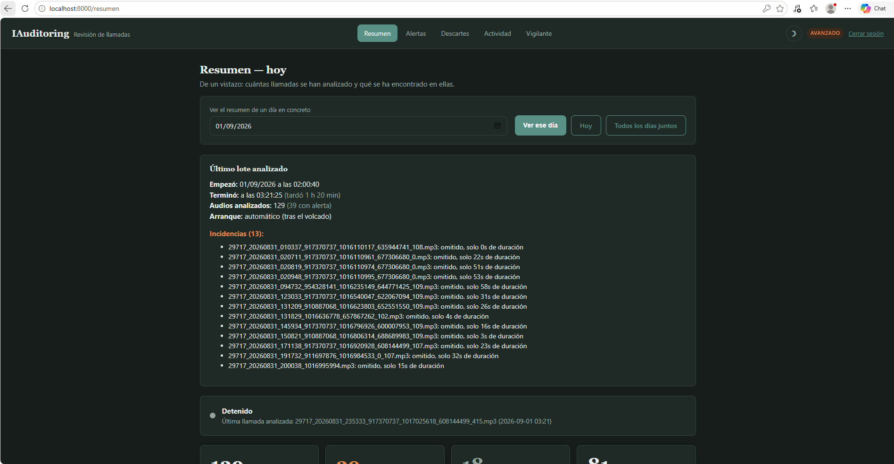
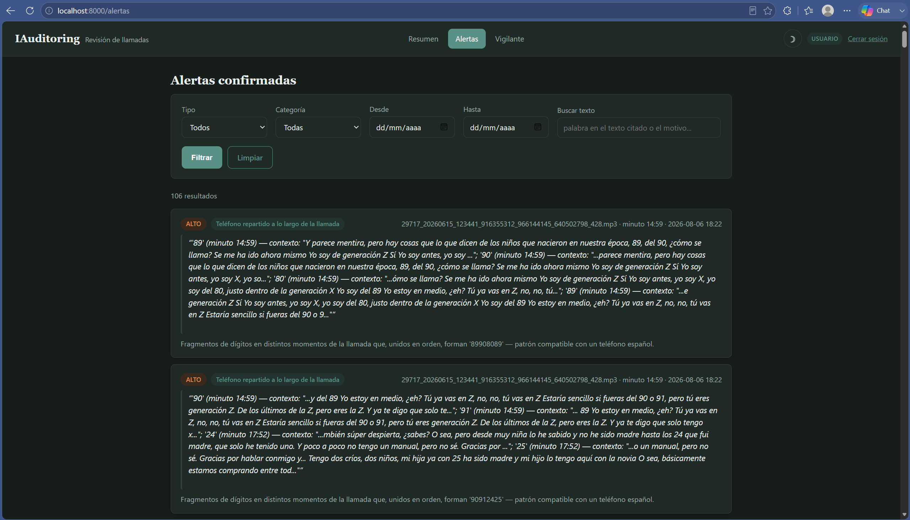
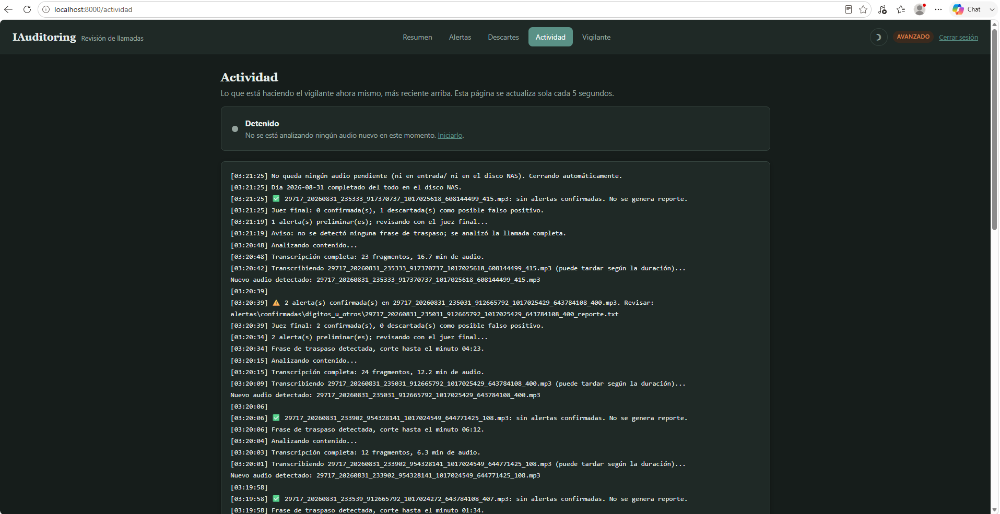
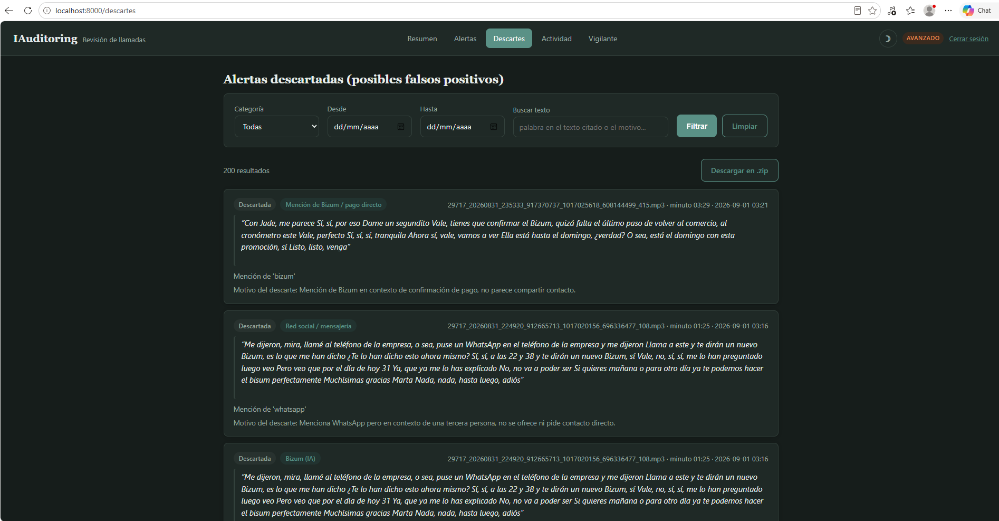
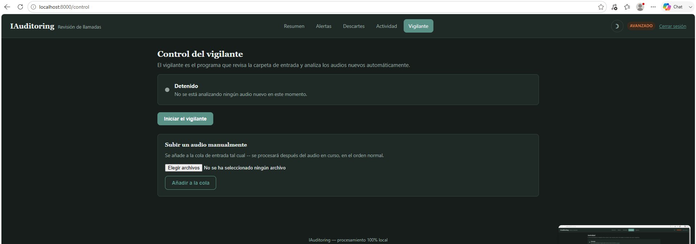

IAuditoring
Sistema de auditoría automática de llamadas con IA · en producción diaria
Analiza llamadas de un call center para detectar intentos de evadir la plataforma, transcribiendo y razonando sobre el audio con modelos de lenguaje ejecutados 100% en local — sin enviar nada a servidores externos.





El código fuente no es público por confidencialidad de la lógica de negocio — el repositorio documenta arquitectura, decisiones de ingeniería y resultados reales en producción.